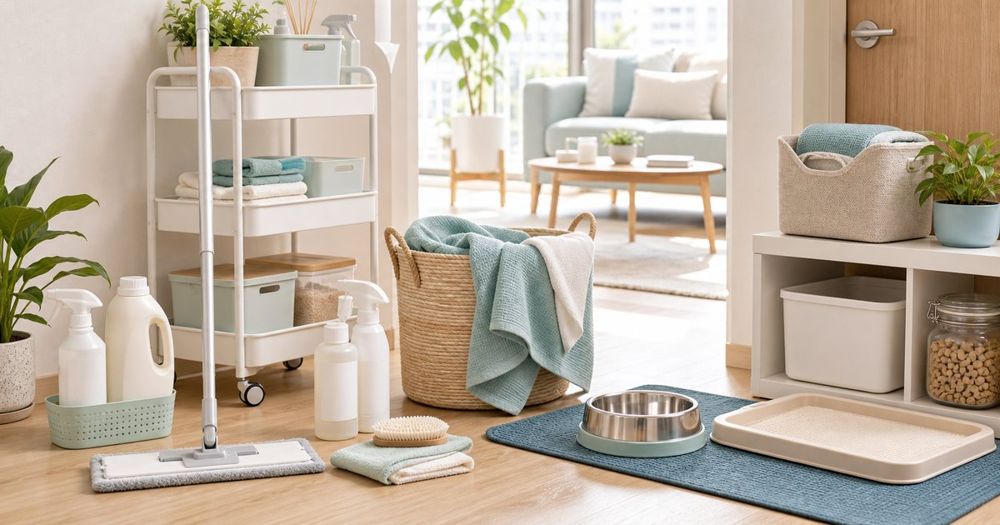

Elite Fashion｜寵物友善居家清潔：地板、洗衣、氣味管理與收納怎麼看
寵物家庭的清潔重點不是買更多用品，而是把地板、洗衣、餐區、砂盆與外出回家動線分開。用品要順手，也要能安全收納。

先把清潔分成五個位置
寵物家庭的清潔不是一瓶產品解決所有事。地板、餐區、砂盆、洗衣和玄關外出回家，各自需要不同用品和收納位置。
可以把 艾寵聯萌、酷狗地板、淨淨 Clean Clean、JINKO 淨科、寵物王國與真蓁嚴選 放在同一個生活情境裡比較，但要先分清楚用途。編輯部會看保存、尺寸、清潔、是否容易收納、是否適合家中成員共同使用，而不是把清單寫成越多越完整。
比較穩妥的順序是先確認 哪個位置每天會清、哪個位置每週整理。常見失誤是 把所有清潔用品放同一櫃，真正需要時找不到；在 小宅客廳、多寵家庭與有地毯或布沙發的家 裡，能被穩定使用、容易補貨、看得懂限制的品項，通常比一次買很多更實際。
- 清潔用品依位置分區。
- 用品放成人容易拿、寵物不易碰的位置。
地板用品要看材質與清潔頻率
地板清潔先看材質：木地板、磁磚、地墊或寵物活動墊，適合的工具和水量不一樣。
可以把 酷狗地板、真蓁嚴選、淨淨 Clean Clean 與 JINKO 淨科 放在同一個生活情境裡比較，但要先分清楚用途。編輯部會看保存、尺寸、清潔、是否容易收納、是否適合家中成員共同使用，而不是把清單寫成越多越完整。
比較穩妥的順序是先確認 地板材質、寵物活動範圍和每日清潔時間。常見失誤是 看到清潔用品就買，卻沒有確認地板適用性；在 客廳、走廊、餐區與寵物睡墊周邊 裡，能被穩定使用、容易補貨、看得懂限制的品項，通常比一次買很多更實際。
- 先看地板材質與商品標示。
- 拖把和清潔用品要固定晾乾位置。
洗衣與布品要有專用收納籃
寵物毛巾、墊子、外出布品和家人衣物最好分開。專用洗衣籃可以讓要洗的東西不再散落，也避免混進日常衣物。
可以把 MORINO、真蓁嚴選、寵物王國與淨淨 Clean Clean 放在同一個生活情境裡比較，但要先分清楚用途。編輯部會看保存、尺寸、清潔、是否容易收納、是否適合家中成員共同使用，而不是把清單寫成越多越完整。
比較穩妥的順序是先確認 哪些布品需要分開清洗、是否有晾曬空間。常見失誤是 寵物布品到處丟，洗衣前才開始找；在 浴室外、陽台、玄關與寵物睡墊區 裡，能被穩定使用、容易補貨、看得懂限制的品項，通常比一次買很多更實際。
- 寵物布品和家人衣物分籃。
- 洗後晾乾位置要先安排。
氣味管理先看通風與來源
氣味管理不該只靠香味覆蓋。先找來源、保持通風、固定清理，再看是否需要用品輔助。
可以把 艾寵聯萌、淨淨 Clean Clean、JINKO 淨科與寵物王國 放在同一個生活情境裡比較，但要先分清楚用途。編輯部會看保存、尺寸、清潔、是否容易收納、是否適合家中成員共同使用，而不是把清單寫成越多越完整。
比較穩妥的順序是先確認 氣味來自砂盆、餐區、布品還是地板。常見失誤是 只用香味遮蓋，沒有處理來源和通風；在 小宅、潮濕季節與多寵家庭 裡，能被穩定使用、容易補貨、看得懂限制的品項，通常比一次買很多更實際。
- 先處理來源，再看用品。
- 避免讓香味變成另一種負擔。
玄關要有外出回家清潔點
外出回家是寵物家庭容易髒亂的關鍵點。牽繩、擦拭用品、毛巾和垃圾袋如果固定在玄關，回家後就不會把髒污帶進家裡。
可以把 尾巴丘、寵物王國、真蓁嚴選與淨淨 Clean Clean 放在同一個生活情境裡比較，但要先分清楚用途。編輯部會看保存、尺寸、清潔、是否容易收納、是否適合家中成員共同使用，而不是把清單寫成越多越完整。
比較穩妥的順序是先確認 回家第一步會站在哪裡、用品是否伸手可及。常見失誤是 外出用品和清潔用品放太遠，回家後懶得整理；在 狗狗散步、雨天回家與開車外出 裡，能被穩定使用、容易補貨、看得懂限制的品項，通常比一次買很多更實際。
- 玄關只放外出回家會用的東西。
- 用完要能立刻丟棄或清洗。
清潔用品越多，越需要一張維護表
寵物家庭的清潔用品如果多人共用，最好有一張簡單維護表。誰補貨、誰洗拖把、誰清砂盆或餐區，都寫清楚會更穩。
可以把 艾寵聯萌、酷狗地板、淨淨 Clean Clean、JINKO 淨科、寵物王國與真蓁嚴選 放在同一個生活情境裡比較，但要先分清楚用途。編輯部會看保存、尺寸、清潔、是否容易收納、是否適合家中成員共同使用，而不是把清單寫成越多越完整。
比較穩妥的順序是先確認 哪些用品會消耗、哪些工具需要清洗或更換。常見失誤是 每個人都以為有人整理，結果用品越堆越亂；在 家庭共同照顧、租屋同住與多寵生活 裡，能被穩定使用、容易補貨、看得懂限制的品項，通常比一次買很多更實際。
- 清潔表只列固定任務。
- 用品用完要回到同一位置。
FAQ
寵物家庭清潔用品要越多越好嗎？
不需要。先把地板、餐區、砂盆、洗衣與玄關分區，用品才不會越買越亂。
氣味管理可以只靠香味嗎？
不建議。應先找來源、整理通風與清潔頻率，再評估是否需要用品輔助。
寵物布品要和家人衣物分開嗎？
建議分籃管理，方便集中清洗與晾乾，也能讓家中動線更清楚。
下一步建議
如果你想整理寵物家庭清潔，可以先從地板、布品、餐區和玄關四個位置開始。
重要警語
本文為一般寵物家庭清潔、收納與動線整理，不作功能、氣味或照護判斷。清潔用品請依商品標示、空間條件與家中成員狀況使用。
本文含品牌／商品導購連結；若你透過部分商品連結前往選購，Elite Fashion 可能取得合作收益。本文仍以編輯判斷與使用情境整理為主，價格、規格、活動與庫存請以商品頁公告為準。